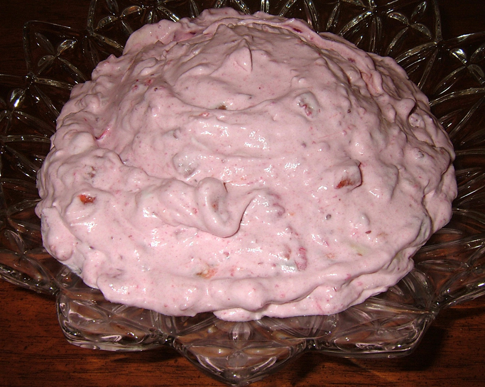

Chilled Pineapple Dessert

Quick And Simple Dessert
This simple dessert has many names and is most often served during the Thanksgiving and
Christmas holidays. People across the country refer to this delicious dessert as pink stuff, strawberry
fluff, pineapple jello salad.
Reguardless of the name and what your family called it, we all agree it's delicious stuff
and grandmother couldn't make it fast enough. Unfornuately it's only served during
the holiday season as a family tradition. My wife and I make it all year long, it's great
stuff, easy to make and only takes about a hour.
Gather The Ingredients
- Large box of strawberry jello.
- Can of crushed pineapple.
- Large container of cottage cheese.
- Large tub of Cool Whip
Time To Do Some Work
- Bring half the amount of water to a boil.
- Add the can of crushed Pineapple and juice to the water.
- Bring everything to a boil again.
- Add the package of Jello to the boiling water/pineapple mixture.
- Pour the pineapple and Jello mixture in a large container and chill for 40 minutes
- After the Jello mix has chilled add all the Cool Whip and cottage cheese to the container
and mix well.
Serve chilled with a sliced banana and or strawberry garnish
Back To Odin Recipes